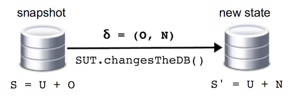

Assertions
JDBDT assertions allow you to verify the contents of a database:
- Delta (δ) assertions verify database state against user-specified incremental changes, i.e., a database delta.
- More traditional state assertions verify that the database contents match a given data set.
- You may also perform complementary verifications, e.g., to compare data sets sets or to check for the existence of database tables.
Delta assertions
δ assertions ? What do you mean ?
δ-assertions state the expected incremental changes made to the database, i.e., an expected database delta. The figure below illustrates the mechanism. Starting from state S, called the reference snapshot, the SUT (software under test) acts on the database, yielding a new database state, S’. S and S’ will have in common unchanged data U = S ∩ S’, but will differ by δ = (O, N), where O = S − S’ is the old data in S no longer defined in S’, and N = S’ − S is the new data in S’.

The programming pattern in line with this scheme is as follows:
Define reference snapshot(s) for the data source(s) of interest theSUT.changesTheDB(); Call delta assertion method(s)
Snapshots
A data source snapshot is a data set that is used as reference for subsequent delta assertions. It can be defined in two ways for a data source s:
- A call to populate(data), s.t. data.getSource() == s and s is a Table instance will set data as the snapshot for s. Since populate(data) resets the full table contents exactly to data, by definition it will be safe to assume it as the correct database state.
- A call to takeSnaphot(source), regardless of the type of s (Table, Query) will issue a fresh database query, and record the obtained data set as the snapshot for s.
Illustration
import static org.jdbdt.JDBDT.*; import org.jdbdt.DataSet; import org.jdbdt.Table; import org.jdbdt.DataSource; ... // [1] Populate a table with some data. Table t = ...; DataSet data = data(t). ...; populate(data); // --> 'data' becomes the reference snapshot // [2] OR take a snapshot. DataSource s = ... ; // 's' can be a Table or Query takeSnapshot(s); // --> internally takes and records a snapshot
Assertion methods
The elementary δ-assertion method is assertDelta. An assertDelta(oldData, newData) call, where oldData and newData are data sets for the same data source s, checks if the database delta is (oldData,newData), as follows:
- It issues a new database query for s.
- It computes the actual delta between the query’s result and the reference snapshot.
- It verifies if the expected and actual deltas match. If they do not match, DBAssertionError is thrown. Details on mismatched data are additionally logged, unless the DB.Option.LogAssertionErrors option is disabled.
A number of other assertion methods are defined for convenience, all of which internally reduce to assertDelta, as follows:
| Method | Description | O | N |
|---|---|---|---|
| assertDelta([msg,] oldData, newData) | Asserts that δ = (oldData,newData). | oldData | newData |
| assertDeleted([msg,] data) | Asserts that data was deleted. | data | ∅ |
| assertInserted([msg, ] data) | Asserts that data was inserted. | ∅ | data |
| assertUnchanged([msg,] source) | Asserts no database changes took place. | ∅ | ∅ |
Illustration
DB db = ... ;
Table t = table("USERS")
.columns("ID", "LOGIN", "NAME", "PASSWORD", "CREATED")
.build(db);
...
// Assert that no changes took place.
... define snapshot with populate or takeSnapshot ...
letTheSUT_doNoChangesToDB();
assertUnchanged(t);
// Assert an insertion
... define snapshot with populate or takeSnapshot ...
letTheSUT_insertOneUser( ... );
assertInserted(data(t).row(999, "john", "John Doe", "justDoeIt", Date.valueOf("2016-01-01"));
// Assert a removal
... define snapshot with populate or takeSnapshot ...
letTheSUT_removeUserById( 999 );
assertDeleted(data(t).row(999, "john", "John Doe", "justDoeIt", Date.valueOf("2016-01-01"));
// Assert an update.
... define snapshot with populate or takeSnapshot ...
DataSet before = data(t).row(999, "john", "John Doe", "justDoeIt", Date.valueOf("2016-01-01"));
DataSet after = data(t).row(999, "john", "John Doe", "dontDoeIt", Date.valueOf("2016-01-01"));
letTheSUT_updatePassword(999, "dontDoeIt")
assertDelta(before, after);
State assertions
A state assertion checks that the database contents in full, and is executed by calling assertState. An assertState([msg,] data) call verifies that the data stored in the database for data.getSource() is (exactly) data as follows:
- It issues a new database query for data.getSource().
- It verifies if the obtained data matches the expected data. If they do not match, as for delta assertions, DBAssertionError. is thrown and details on mismatched data are logged.
Note that no reference snapshot needs to be set for a state assertion, unlike δ-assertions.
An assertEmpty([msg,], source) call is equivalent to assertState([msg,], empty(source)), i.e., it verifies that the given data source has no defined rows.
Illustration
DB db = ... ;
Table t = table("USERS")
.columns("ID", "LOGIN", "NAME", "PASSWORD", "CREATED")
.build(db);
...
// Assert that table is empty.
letTheSUTDeleteAllUsers( ... );
assertEmpty(t);
// Assert state after insertion
DataSet initialData = ...;
populate(initialData);
...
DataSet expected =
DataSet.join(initialData,
data(t).row(999, "john", "John Doe", "justDoeIt", Date.valueOf("2016-01-01")));
letTheSUT_insertOneUser( ... );
assertState(expected);
Other assertions
Data set comparison
Two given data sets can be verified as equivalent using the assertEquals method. Note that an assertion of this kind will be insensitive to the order of rows in each data set (like all JDBDT delta or state assertions).
For JUnit users: also beware not to confuse assertEquals with JUnit methods that go by the same name. JUnit’s assertEquals will not work properly, since DataSet (deliberately) does not override Object.equals. All will go well if you use a static import for all methods in the JDBDT facade.
Illustration
// Fill a database table.
DB db = ... ;
Table t = table("USERS")
.columns("ID", "LOGIN", "NAME", "PASSWORD", "CREATED")
.build(db);
DataSet initialData = ...;
populate(initialData);
...
// Assert that all data is returned.
DataSet expected = initialData;
List<User> listOfUsers = letTheSUTQueryAllUsers( ... );
Conversion<User> conv = ...;
DataSet actual = data(t, conv).rows(listOfUsers);
assertEquals(expected, actual);
Table existence assertions
The assertTableExists assertion methods verifies if a given table exists in the database. Symmetrically, assertTableDoesNotExist verifies that a table does not exist (e.g., has been dropped by the SUT).
Illustration
DB db = ...; letSUTDoSomething(); assertTableExists(db, "Users") assertTableDoesNotExist(db, "TempUsers")